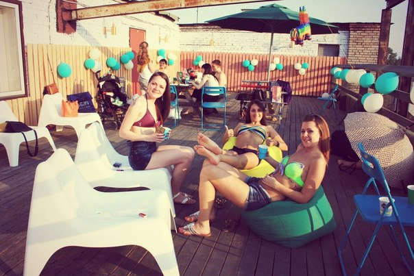

A lot of text here, many-many symbols and worlds together. По данным МВД, в 2014 году к административной ответственности за курение были привлечены более 20 тысяч человек. Расширенный антитабачный закон действует несколько дней, однако многие кафе и рестораны используют лазейку - летние веранды, на которых курить вроде бы можно.